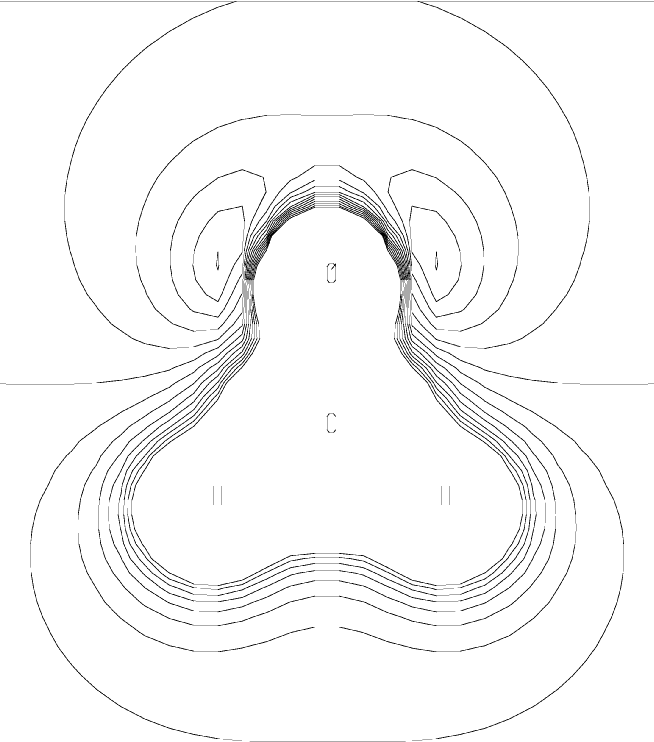

The Orozco-Luque molecular electrostatic potential map [40] for a cross-section through a system is calculated and printed. The output is written to <filename>.mep and <filename>.tab
In order to use MEP=1, extra data are needed at the end of the normal data-set. The extra data consist of four lines of numbers, as defined in the Table.
|
Extra Line |
Description |
|
1 |
Bottom left-hand corner of cross-section (three numbers) |
|
2 |
Top left-hand corner of cross-section (three numbers) |
|
3 |
Bottom right-hand corner of cross-section (three numbers) |
|
4 |
Step-size in Ångstroms for points from (1) to (2) |
An example of a MEP=1 data set is given in Figure 1; the corresponding plot is shown in Figure 2. This plot can be compared with the PMEP plot.
Figure 1:
Calculation of ESP Cross-Section in Formaldehyde using the Orozco-Luque Model
Line * 1scf AM1 mep=1 * Formaldehyde (Cross-section in plane of molecule) * Generate a 2-D grid of MEP potentials for 'meplot' to use * O 0.00000000 0 0.0000000 0 0.0000000 0 0 0 0 * C 1.22732374 1 0.0000000 0 0.0000000 0 1 0 0 * H 1.11047287 1 122.2253516 1 0.0000000 0 2 1 0 * H 1.11048351 1 122.2158646 1 179.9998136 1 2 1 3 * 1 -2.3 2.7 0 (Note: For 'meplot' to work, the first coordinate of line 2 2 -2.3 -2.7 0 here must be the same as the first coordinate of line 1) 3 4.1 2.7 0 4 0.2 |
Figure 2:
Molecular Electrostatic Potential around Formaldehyde|
 |